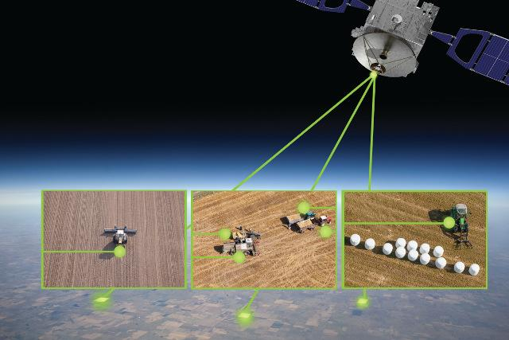
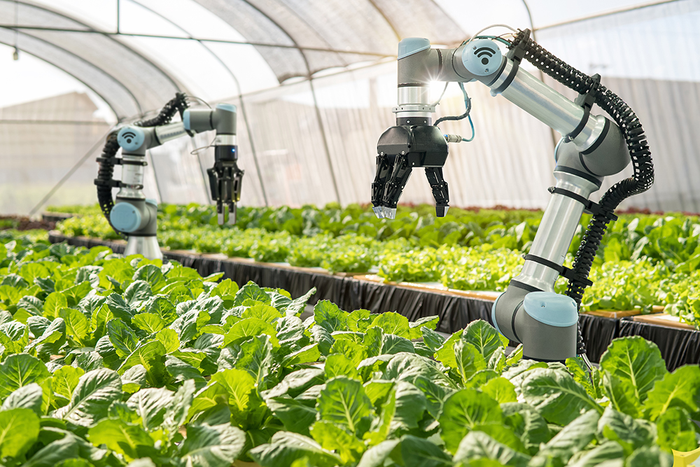

Farming in the 21st century is undergoing a revolution, thanks to the integration of artificial intelligence. From predicting crop yields using big data analytics to deploying autonomous drones for real-time monitoring, AI is transforming traditional agricultural practices into smart, efficient, and sustainable systems. These innovations are not just improving productivity but also helping farmers make data-driven decisions to reduce waste and conserve resources.
This site showcases key technologies shaping modern agriculture—such as crop health monitoring, smart irrigation, precision farming, and soil testing—highlighting how AI tools are being deployed in the field. Explore our gallery to learn more about how innovation is taking root in every corner of the agrotech industry, leading to a more secure and sustainable food future.



